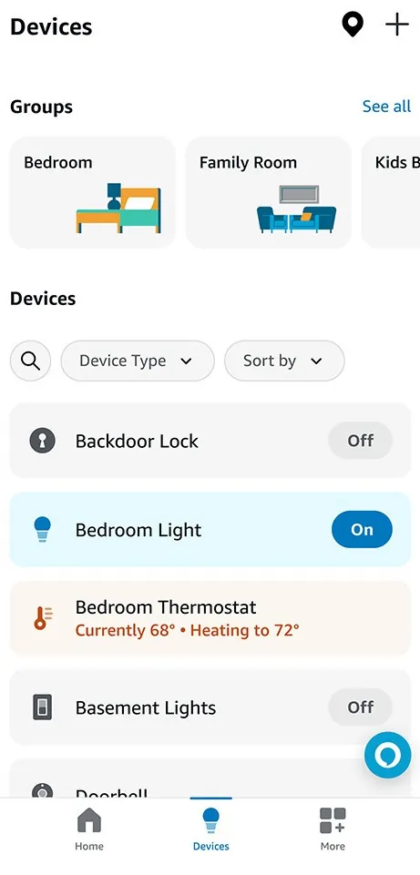
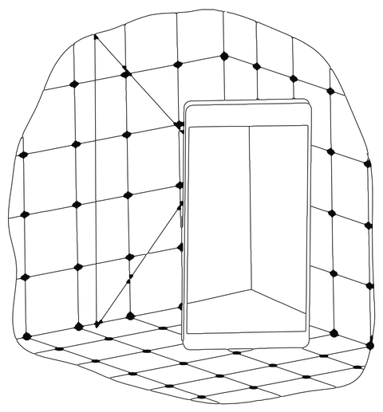

Alexa Map View
I led the Alexa app’s smart home experience and the launch of Map View. The mapping technology existed; the problem I owned was ease. I set the bar the scan had to clear, worked map accuracy in the same cycles of testing, and took Map View to launch.
- Scale
- 50M+ monthly usersMonthly users of the Alexa app’s smart home features.
- Target
- Ease of 5.5 out of 7Customers’ rating of the scan’s ease on a 7-point scale, with the map still accurate.
- Launched
- November 2023


Decisions
One list for every device
In September 2023, Amazon said customers had connected more than 400 million smart home devices to Alexa, and millions of them had more than 20.
In the Alexa app, each device was a row in one list, found by its name: Backdoor Lock, Bedroom Light, Bedroom Thermostat. I led the smart home features of that app. In 2023, they had more than 50 million monthly active users.
Phones could already measure a room
The iPhone 12 Pro gained a LiDAR (light detection and ranging) scanner in October 2020, so a phone could measure the depth of a room.
In June 2022, Apple gave app developers RoomPlan, which turns a scan of one room into its outline. An expert surveyor could already make a high-fidelity scan of a whole home. For us, the hard problem was ease. We set a target: customers would rate “Scanning my home to create a Map View is incredibly easy” at 5.5 or higher on a 7-point scale, with the map still accurate.

Scan, place, control
A customer held up a Pro iPhone and walked the home one room at a time, then dragged each device onto its room.
White lines traced the walls and furniture as a small 3D model of the room grew on screen. A tap on a pin switched a light or set the thermostat.

From a phone scan to a floor plan
Three steps turned a phone scan into a floor plan with every device in its room.
Illustration
The data as a table
| Step | What happens |
|---|---|
| Scan rooms | The phone measures each room’s walls and furniture, one room at a time. |
| Join rooms | The rooms join at their doorways into one floor plan of the home. |
| Place devices | Each device is dragged onto its room, so each one has its place. |
| Room | Devices |
|---|---|
| Living Room | Lamp, Echo |
| Kitchen | Light |
| Hallway | Thermostat, 72° |
| Primary Bedroom | Lamp |
| Office | Plug |
| Bathroom | None |
From depth to a floor plan
The LiDAR scanner measured depth as the customer walked, and software on the phone found the walls, doors, windows and furniture.
Camera images were processed on the phone and not stored, and the finished map was encrypted and stored in Amazon’s cloud. Each pin showed its device’s live state from Alexa, and a tap sent the command back through Alexa.

- On the phoneMeasure the roomThe LiDAR scanner and camera capture depth and images as the customer walks.
- On the phoneFind the room’s shapeWalls, doors, windows and furniture are found; images stay on the phone.
- On the phoneJoin the roomsEach new room is placed against the last at the doorway the customer chose.
- On the phoneFix and placeAn editor moves, splits or rescans a room; devices are dragged onto the plan.
- In Amazon’s cloudStore the mapThe finished floor plan is encrypted and stored with the customer’s account.
- In Amazon’s cloudShow live stateEach pin shows its device’s state from Alexa.
- In the homeControl the deviceA tap on a pin sends the command through Alexa to the light, plug or thermostat.
Customers’ ease ratings and checks of the map against the real home changed the coaching, the flow and the editor.
Map View’s pipeline in 2023, drawn from Amazon’s published descriptions.
Placing devices automatically
Map View placed devices by hand, with a Test button that blinks a light. Amazon’s patent application of December 2023 describes four ways to locate a device. In one, the customer taps a lamp in the camera view and the phone finds it in the room’s 3D scan; in another, a bulb blinks a unique pattern for the camera to find.
Ease and accuracy in the same cycles
We worked on ease and map accuracy in the same cycles, and the flow customers followed came out of that work.
Customers scanned one room at a time. Amazon’s help pages tell them to start each new room from its doorway, and describe an editor that moves, splits or rescans a single room. Internal beta customers and research showed that seeing status at a glance mattered, so each pin was designed to show its device’s state.
| Who | What they reported | Time |
|---|---|---|
| Amazon | An estimate per room, and per 10 devices | About 1 minute each |
| Tom’s Guide | A home scanned and its devices placed | Under 10 minutes |
| The Verge | Two open-plan rooms that were hard to align | About 30 minutes |
Announced and launched in 2023
Amazon announced Map View on 20 September 2023, at its devices event at HQ2, its second headquarters, in Arlington, Virginia.
Map View launched in November 2023, for customers in the United States who had signed up. The Verge, a technology news site, wrote: “Finally, no more scrolling through an endless list of devices.” At the CES trade show in January 2024, Samsung, LG and TP-Link’s Tapo showed map-based controls of their own.

Alexa Home Map, the successor
Map View was the first version of Amazon’s home map: scan each room, place each device, control it from the map.
On 28 October 2026, Amazon announced Alexa Home Map, a 3D successor that keeps those steps. It adds the outside of the house, built from the street address, and lights that glow in their set color. The Verge called it “a ground-up rebuild of the map view that launched in 2023.”